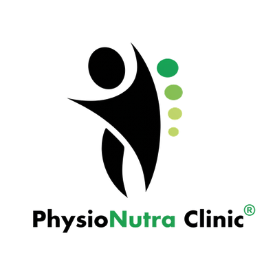

Rapid Pain Relief
Most patients notice significant pain reduction within 10 minutes of heat application, making it one of the fastest non-pharmacological pain-relief modalities available in physiotherapy.

Professional moist heat therapy for rapid pain relief, deep muscle relaxation & accelerated recovery — at our Zirakpur clinic or at your home across Chandigarh, Mohali & Panchkula.
No obligation — speak to our heat therapy specialist today
Hot fomentation is a professional thermotherapy technique that applies controlled moist heat to specific body areas using heated hydrocollator packs. The therapeutic warmth penetrates deep into muscles and joints, triggering vasodilation (widening of blood vessels), reducing muscle spasm, and activating the pain gate mechanism to block pain signals from reaching the brain.
At PhysioNutra Clinic, hot fomentation is used as both a standalone treatment and as preparation for manual therapy, joint mobilisation, and exercise — maximising the pliability of soft tissue and improving overall treatment outcomes. Dr. Tarun Garg has over 10 years of experience tailoring heat therapy protocols for each patient's specific condition.
Hot fomentation therapy in Chandigarh Tricity is available at PhysioNutra Clinic, Zirakpur. The clinic provides professional moist heat therapy for chronic pain, arthritis, muscle spasms, frozen shoulder, and sports injury recovery. Home visits available across Chandigarh, Mohali, Panchkula, and Zirakpur. Sessions last 15–20 minutes. Contact: +91 94177 91833.
Note: Hot fomentation is not recommended for acute injuries (first 48–72 hours), open wounds, or active infection. Our physiotherapists assess every patient before treatment. Book a free assessment today.
Four evidence-based physiological mechanisms that make thermotherapy effective
Heat causes blood vessels to dilate, increasing local blood flow by up to 150%. This enhanced circulation delivers oxygen and nutrients to damaged tissue while flushing out inflammatory waste products and metabolites that cause pain.
Warmth reduces muscle spindle activity — the sensory receptors responsible for maintaining muscle tone. This directly reduces muscle guarding and spasm, providing immediate relief from tension and allowing greater range of motion.
Heat stimulates thermoreceptors (A-delta fibres) which competitively inhibit pain signal transmission via the dorsal horn gate. This is the same principle underlying TENS therapy — heat effectively “closes the gate” on pain.
At 40–45°C, collagen fibres become significantly more extensible. Applying stretch or manual therapy immediately after fomentation yields greater gains in flexibility and joint range of motion — a core principle in our combined treatment approach.
Why thousands of patients across Chandigarh Tricity choose PhysioNutra for heat therapy
Most patients notice significant pain reduction within 10 minutes of heat application, making it one of the fastest non-pharmacological pain-relief modalities available in physiotherapy.
Penetrating moist heat reaches deeper into muscle tissue than dry heat sources like hot water bottles, releasing chronic tension that topical treatments cannot address.
Heated tissues are significantly more extensible, allowing greater gains from stretching, manual therapy, and exercise. Patients typically gain 20–30% more range of motion from the same exercises when preceded by fomentation.
Increased blood flow accelerates tissue repair by delivering growth factors, collagen precursors, and oxygen while removing inflammatory cytokines that impede healing.
Especially effective for arthritis sufferers, regular heat therapy retrains joint fluid distribution and reduces the prolonged stiffness that makes mornings debilitating.
Therapeutic warmth stimulates parasympathetic nervous system activity, reducing cortisol and adrenaline levels. Patients consistently report improved sleep and reduced anxiety after regular sessions.
Effective thermotherapy for a wide range of musculoskeletal and pain conditions
Choosing the right temperature therapy is essential for effective treatment. Our physiotherapists guide every patient.
Not sure which is right for you? Call us for a free assessment — we’ll guide you to the most effective treatment for your specific condition.
A step-by-step guide to your professional heat therapy session at PhysioNutra Clinic
Our physiotherapist reviews your medical history, current symptoms, and checks for any contraindications. Target treatment areas are identified and goals are discussed. For new patients this is a full 20-minute assessment at no charge.
You are positioned comfortably for optimal access to the treatment area. Skin is inspected and a protective barrier of toweling layers is prepared to ensure safe heat delivery without risk of burns.
A professionally maintained hydrocollator pack, heated to 40–45°C, is applied to the target area. This temperature range is clinically established as optimal for therapeutic benefit without tissue damage. You simply relax while the heat works.
Your physiotherapist checks skin condition and comfort at regular intervals throughout the session. Temperature and pack placement are adjusted as needed. You are always in control and can request adjustments at any time.
While tissues are warm and maximally extensible, we proceed with manual therapy, stretching, joint mobilisation, or therapeutic exercise — unlocking significantly greater treatment gains than cold-tissue treatment alone.
You receive a personalised home heat application guide covering safe technique, temperature, duration, and frequency. A follow-up schedule is recommended based on your condition and treatment response.
Evidence-based safety standards applied at every session by our certified physiotherapists
Clinic-based and home-visit heat therapy available throughout the Chandigarh region
Our main clinic. Purpose-built physiotherapy facility with professional hydrocollator units, private treatment bays, and full range of complementary therapies.
Explore ZirakpurClinic and home-visit heat therapy for all Chandigarh sectors. Just 15 minutes from Sector 17. Same-day appointments often available.
Explore ChandigarhExpert heat therapy for Mohali residents — in-clinic at our Zirakpur facility (10 minutes) or home visits across all Mohali phases.
Explore MohaliHot fomentation therapy available at our Sector 20 Panchkula branch and through home visits across all Panchkula sectors and Kalka.
Explore PanchkulaWhat our patients across Chandigarh Tricity are saying about PhysioNutra’s heat therapy
I suffer from severe arthritis in my knees. Hot fomentation sessions at PhysioNutra have been a game-changer. The warmth provides immediate relief and combined with exercises I’ve regained so much mobility. I finally sleep through the night again.
My chronic back pain made daily work impossible. After hot fomentation combined with Dr. Tarun’s manual therapy, I finally found lasting relief. The home visit service was especially convenient as I couldn’t travel in the early stages. Highly recommend!
Frozen shoulder was limiting my ability to work at a desk. PhysioNutra’s hot fomentation before my stretching sessions made such a difference. My range of motion improved dramatically in just 3 weeks. The team is professional, knowledgeable and caring.
Everything you need to know about professional heat therapy in Chandigarh Tricity
Don’t let chronic pain or stiffness limit your life. Our expert team is ready to help you feel better with professional hot fomentation therapy — tailored to your condition, safe, and effective.
Located in Zirakpur — 15 min from Chandigarh, 10 min from Mohali, 20 min from Panchkula